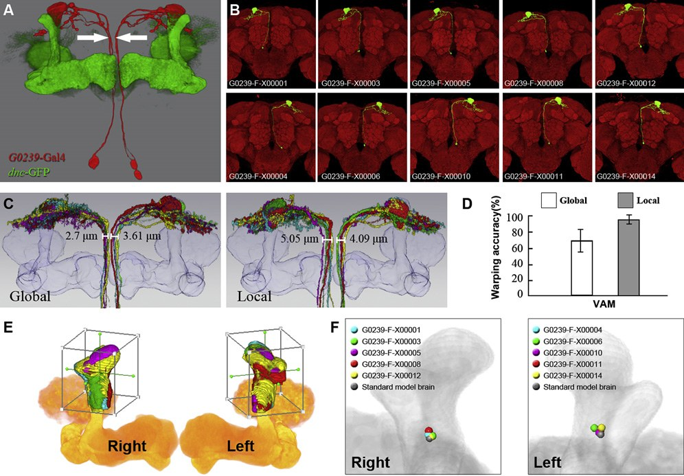
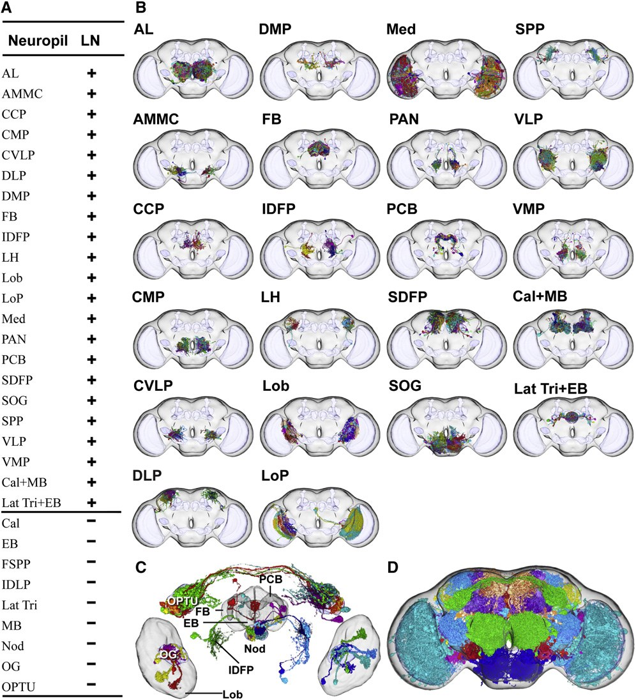
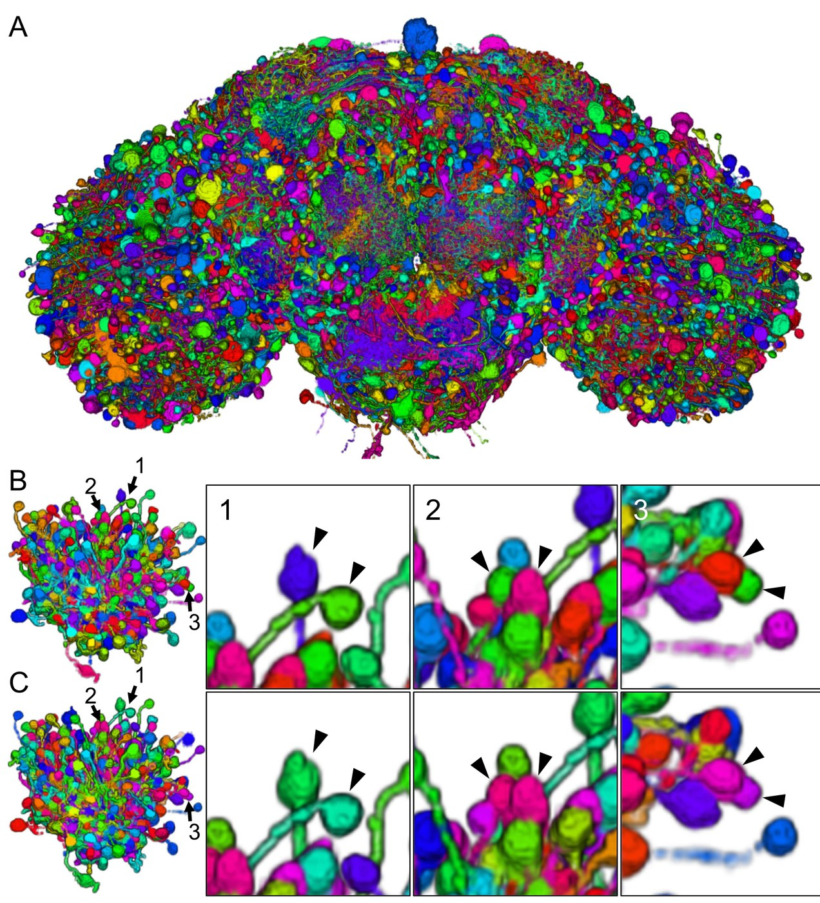
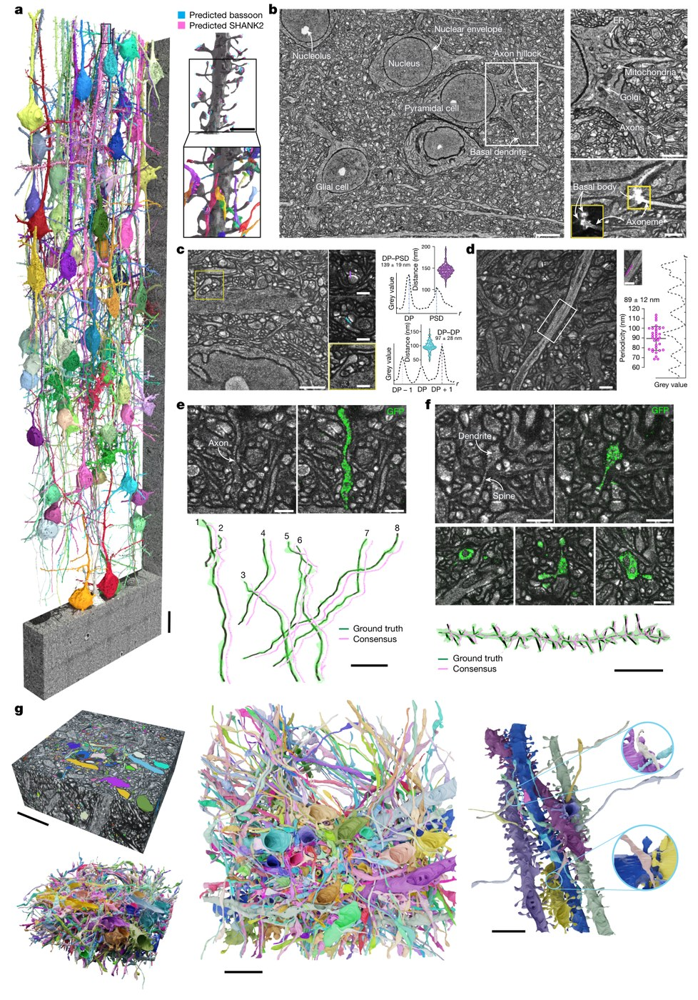
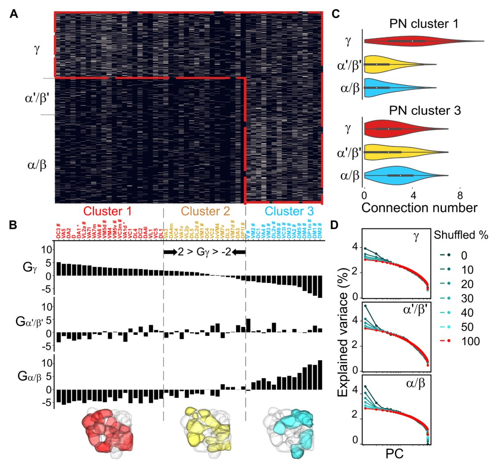

從知識庫內容建立新課程
知識庫建好了，十一篇論文、九個主題。它不只是一座可以查的維基百科—— 裡面整理過的「主題概念」就是現成的課綱。這一集拿第一個主題 FlyCircuit 資料庫示範：主題頁怎麼變成七堂課、條目怎麼變成講義、 哪些是 Agent 能生成的、哪些仍然要你決定。
 播放教學影片 · 11 分 49 秒 · 在 YouTube 開啟 ↗
播放教學影片 · 11 分 49 秒 · 在 YouTube 開啟 ↗
怎麼讀這一頁
為什麼從知識庫開課
前三集把一批論文做成了 wiki：條目是證據、主題頁是骨幹、首頁是地圖。讀它的方式有兩種。 第一種是當維基百科用——想到什麼就查，從主題頁連到條目、從條目連回主題頁。 第二種是拿它來教自己：主題頁本來就是一篇「這個主題在做什麼」的科普文， 七節結構、數字全連回條目、末尾還列著「還沒解決的事」。這不就是一門課的課綱嗎？
這一集就做這件事。素材只有一頁——Wiki/topics/flycircuit-database.md——
它的七節變成七堂課；它引用的八篇條目變成講義裡的數字與出處；它的〈還沒解決的事〉變成課末的思考題；
它記下的「三處對不起來的數字」變成測驗題。Agent 負責把結構攤開、把數字連回來源、把文字改寫成講課的口吻；
課要教什麼、教到多深、哪一句才是重點——仍然是人決定的。頁尾有一張對照表，說明每一課從主題頁的哪一節來。
六篇論文共用的地基。這一頁講它是什麼、怎麼建起來的、每一版有多少東西、各篇論文各拿了哪一部分去用——以及三處跨論文對不起來的數字。
它是什麼：一顆一顆拍下來的腦
FlyCircuit 是一個公開的果蠅腦單神經元影像資料庫（網址 flycircuit.tw）。裡面每一筆資料，是一顆神經元的完整立體影像： 用遺傳技術讓一隻果蠅的腦裡只有一顆（或極少數）神經元發螢光，拍下它的三維形狀，再對位到一顆「標準腦」的座標系裡。 這個動作重複幾萬次，就得到幾萬顆神經元在同一座標系裡的影像庫。
為什麼值得一堂課？因為本知識庫「果蠅連結體」領域的前六篇論文，沒有一篇不依賴它。 2011 年那篇建了它，之後五篇不是拿它的資料做分析，就是替它做工具。要讀懂那六篇之間的關係，得先知道這個資料庫是什麼、每一版有多少資料、品質邊界在哪裡。
裡面每一筆資料是一顆神經元的完整立體影像：用遺傳技術讓一隻果蠅腦裡只有一顆（或極少數）神經元發螢光，拍下它的三維形狀，再對位到標準腦座標系。重複幾萬次，就得到幾萬顆神經元在同一個座標系裡的影像庫。

- 一筆資料 ＝ 一顆神經元的 3D 影像，不是一張照片 —— 條目 2011-Chiang-FlyCircuit
- 建立它的論文：Chiang et al., Current Biology 2011；標準腦切分出 58 個形態可區分的神經氈
- 依賴它的論文：2011、2015、2018、2019、2021、2024 —— 主題頁
sources欄
怎麼建起來：三個技術，一個偏差
一次只點亮一顆。用 MARCM 遺傳技術，讓螢光蛋白只在極少數隨機的神經元裡表現。每隻果蠅腦裡只有一顆或幾顆亮的，其餘全暗，共軛焦顯微鏡拍下亮的那顆。 方法不難，難的是規模——要拍一萬六千顆，就要解剖、染色、拍攝數以千計的果蠅。
標準腦。一萬六千顆神經元來自一萬六千隻果蠅，每隻腦的大小形狀都略有差異。要放進同一座標系，得先有一顆「標準腦」當底圖。 研究團隊沒有用「幾十顆腦平均起來」的方式——平均會讓影像模糊、邊界消失——而是從 34 個樣本算出平均外形之後， 從真實樣本裡挑出最接近平均值的那一顆當模型。代價是：標準腦終究是一個個體。
影像對位。把每顆單神經元影像透過數學變換「貼」到標準腦上。這一步有誤差，而且論文量過：用每隻果蠅都有、投射路徑相當固定的 VAM 神經元檢驗， 只做全腦對位時末梢落點正確率 69%，針對局部再做一次精細對位可提升到 95%。這個數字是後面所有跨個體分析的精度上限。
一個常被忽略的偏差。神經元是用 Gal4 driver 標記的——哪些神經元進了資料庫，由所用的 driver 決定，不是全腦均勻抽樣。 2011 年論文自己算過：九條 driver 合計標記超過十五萬顆神經元，超出全腦估計總數五成，代表 driver 並未忠實反映內源表現。 這個偏差跟著資料一路傳到所有下游分析。
研究團隊沒有用「幾十顆腦平均起來」的方式（平均會讓影像模糊、邊界消失），而是從真實樣本裡挑出最接近平均值的那一顆當模型。


- 標準腦：34 個樣本算平均表面，再選一顆真實腦；雌雄各一、六日齡 —— 2011 條目〈方法〉
- 對位誤差：全腦 69%（±10%，n=10）→ 局部 95%（±3%）；蘑菇體地標誤差 3.9 → 1.1 µm —— 2011 條目
- 對位方法：全域 affine，12 自由度；局部二階段對位是選項，全庫一律先做全域 —— 2011 條目〈方法〉
- driver 偏差：九條 driver 合計 >150,000 顆，超出全腦估計 50% —— 2011 條目；2015 條目列了十三種 driver
三個版本，資料怎麼長大
FlyCircuit 不是一次建好就不動的。六篇論文用的是三個不同版本，版本之間差的不只是數量。
| 版本 | 年份 | 單神經元影像數 | 新增了什麼 | 出處 |
|---|---|---|---|---|
| 1.0 | 2011 | 約 16,000 | 資料庫本身、標準腦、58 個神經氈 | 2011-Chiang-FlyCircuit |
| 1.1 | 2015 | 23,579（雌 18,179 ＋ 雄 5,400） | 每顆神經元的軸突／樹突極性標註（SPIN 方法）、全部影像的標準腦座標 | 2015-Shih-InfoFlow |
| 1.2 | 2019 | 28,573（雌 22,834） | 數量 | 2019-Shih-CommunityStructure |
1.1 版新增的極性標註是關鍵：有了「哪邊是輸入、哪邊是輸出」，才能建有向網路——這是 2015 年論文能做資訊流分析的前提。
那麼，兩萬八千顆夠不夠？果蠅全腦約十到十三萬顆神經元（各論文的估計不同），1.2 版約占五分之一。2011 年論文用「有限尺度分析」回答過： 從資料集裡隨機抽一成的子集，就能重現全集 0.97 以上的跨區連結模式。也就是說，以中尺度的腦區連結來說，這批資料的內部冗餘度夠高。 但要注意這個論證證明的是什麼：它比較的是自己的子集與自己的全集，證明的是資料集內部一致，不是對未取樣那五分之四的代表性。

- 1.0 → 1.1 → 1.2：16,000 → 23,579 → 28,573；雌性 18,179（3,355 LN ＋ 14,824 PN）→ 22,834 —— 2015、2019 條目
- 有限尺度分析：子集超過總量 10% 時相關係數 > 0.97；隨機網路要到 95% 才達標 —— 2011 條目 Fig 6F 解讀
- 全腦神經元數：2011 論文寫「十萬」、主題頁寫「約 135,000」—— 兩個口徑都在知識庫裡，引用時要標明
六篇論文各拿它做什麼
六篇論文對 FlyCircuit 的關係分三種：
建立它——2011 年那篇。產出 1.0 版，並在這批資料上做第一輪分析：41 個 LPU、6 個 hub、58 條神經束的中尺度連結圖。
用它做分析——兩篇。2015 年用 1.1 版雌腦的 12,995 顆投射神經元建有向加權網路，49 個節點（LPU 級）； 2019 年用 1.2 版雌腦 22,834 顆建神經元級網路，剔除非強連通節點後 19,902 個節點。兩篇是同一套圖論工具在兩個尺度上跑一遍。
替它做工具——三篇。2018 年 Kaleido 解決「一萬顆神經元怎麼一起看」；2021 年 NeuroRetriever 把人工分割自動化，對全部 22,037 張原始腦影像跑一遍、取回 28,125 顆； 2024 年 LYNSU 分割的不是神經元而是神經氈，用影像的另一個通道，對 22,835 顆雌腦全跑。三篇工具論文的共同點是：驗證規模都是全庫，不是挑好看的案例。
這裡藏著一個容易混淆的地方：「原始腦影像」和「單神經元影像」是兩個數字。一張原始腦影像裡可能有不只一顆神經元—— 2021 年從 22,037 張原始影像取回 28,125 顆，比例約 1.28。所以講 FlyCircuit「有幾筆資料」時要說清楚是算腦還是算神經元。
| 關係 | 論文 | 用的版本／規模 | 做了什麼 |
|---|---|---|---|
| 建立 | 2011 Chiang | 1.0，約 16,000 | 標準腦、41 LPU、58 神經束的連結圖 |
| 分析 | 2015 Shih | 1.1，12,995 顆投射神經元 | 49 節點有向加權網路、五模組、rich club |
| 2019 Shih | 1.2，22,834 → 19,902 節點 | 神經元級網路、八社群、非小世界 | |
| 工具 | 2018 Wang（Kaleido） | 隨機 10,000 顆 | 壓平圖層＋Monte Carlo 配色 |
| 2021 Shih（NeuroRetriever） | 22,037 張原始影像 → 28,125 顆 | 自動分割，65.8% 可直接入庫 | |
| 2024 Hsu（LYNSU） | 22,835 顆雌腦 | 神經氈自動分割，IoU 0.833 |



三處對不起來的數字
這一課是閱讀訓練。三個問題單看任何一篇論文都不會發現，六篇排在一起才看得到——這正是主題頁存在的理由。
一、LPU 有 41 個還是 43 個？ 2011 年原文寫「41 個 LPU、6 個 hub」；2015 年引用它時寫「43 個 LPU 加 6 個 interconnecting unit」，合計 49 個節點。 41 加上 2011 年正文列出的四對缺 LN 神經氈（八個）也是 49。總數吻合、分類法不同——疑似部分單元的歸屬在兩篇之間被重新劃分過，但具體哪兩個換了類別，兩篇正文都沒交代。 而 2011 年論文自己也有一處不一致：摘要說 6 hubs，正文列的是四對（八個）。
二、28,573 是腦還是神經元？ 2019 年說 v1.2「hosts 28,573 images of single neurons」，2021 年說 v1.2 是「22,037 張原始腦影像、28,573 張單神經元影像」——兩篇一致，28,573 是神經元。 但 2024 年寫「hosts images from 28,573 Drosophila brains」，單位變成了腦。從 2021 年的資料看，腦影像應是 22,037 張，2024 年這句大概是筆誤。 同一篇 2024 論文的「22,835 顆雌腦」跟 2019 年的「22,834 顆雌性神經元」差一，且單位不同；合理推測是同一批資料、一篇算腦一篇算神經元、其中一篇多算或少算了一筆——但這是推測。
三、28,125 對 28,573。 2021 年的自動分割取回 28,125 顆，比人工分割庫的 28,573 少 448 顆，文中沒有交代這 448 顆的下落。
這三個問題我在各篇論文頁的〈疑點與待追〉都記了，集中在這裡是因為它們本質上是同一件事：同一個資料庫，在不同年份、不同論文裡被用不同的口徑描述。以後引用 FlyCircuit 的任何計數，要標明版本和單位。
- 41 vs 43：41＋8＝49＝43＋6 —— 2011、2015 條目的〈疑點與待追〉都記了，互相指向
- 28,573 的單位：2019「single neurons」、2021「單神經元影像」、2024「brains」—— 2024 條目標了 ⚠️「本知識庫第三次撞到跨論文計數問題」
- 448 顆：28,573 − 28,125 —— 2021 條目〈疑點〉，狀態：待查
資料的邊界
FlyCircuit 資料有三個天生限制。它們不是任何一篇論文的缺陷，是光學單神經元成像這條路線的性質——讀這六篇之前，先記住。
看不到突觸。光學顯微鏡的解析度不夠。所以所有「連結」都是空間共域的推論——兩顆神經元的纖維進到同一個區域，就推定有接觸的機會； 實際突觸的有無、方向、數量都不知道。2019 年論文用「距離小於一微米」當連結判準，拿一批被詳細解剖過的神經元對照，真連結只抓到四成（誤報率百分之二）。 這是那篇所有網路結論的前提。
方向是預測的。1.1 版之後的極性標註來自 SPIN，一種依形態判斷樹突和軸突的方法。準確率沒有在這六篇裡被量化。
取樣有偏。第 02 課講過的 driver 問題。
三點合起來的意思是：FlyCircuit 給的是中尺度的、有向但方向為推測的、取樣有偏的連結圖。在這個定位上它做得很好，超出這個定位的推論都要小心。
- 連結判準：軸突－樹突棘段距離 < 1 µm；驗證集 442 顆 PB 相關神經元；TPR 0.40、FPR 0.02 —— 2019 條目
- TPR 0.40 的含意：漏了六成真連結的部分圖，不是塞滿假連結的錯圖——負向陳述（「A 與 B 無連結」）的證據力遠弱於正向 —— 2019 條目〈問題與限制〉
- SPIN 準確率：六篇皆未量化 —— 主題頁〈資料的邊界〉；網路分析主題頁列為「還沒解決的事」第一條
兩條新路：EM 與膨脹顯微鏡
FlyCircuit 看不到突觸，那什麼看得到？電子顯微鏡（EM）連結體——hemibrain、FlyWire——在 2020 年前後補上了突觸級的解析度和方向性。 兩者的關係是互補：光學給全腦骨架和遺傳操作的接口，EM 給局部的精確連線。本知識庫已有一篇用 hemibrain 的分析（2025 Cheng，蕈狀體的 PN→KC 連結）—— 同一個實驗室、資料換成 EM、問題下探到單一腦區的突觸級。
還有第三條路：2025 年的 LICONN 用膨脹顯微鏡讓光學做到 EM 級的密集重建，還多了分子讀出。它跟 FlyCircuit 同是光學，但策略相反—— FlyCircuit 用稀疏標記繞過解析度問題，LICONN 用膨脹正面解決它。稀疏給全腦骨架、密集給局部突觸。


| FlyCircuit（稀疏光學） | hemibrain / FlyWire（EM） | LICONN（膨脹光學） | |
|---|---|---|---|
| 一次看 | 一顆神經元，全腦 | 所有神經元，局部體積 | 所有神經元，局部體積 |
| 「連結」是 | 空間共域的推論 | 看得到的突觸 | 看得到的突觸＋分子標記 |
| 方向 | 形態預測（SPIN） | 突觸極性直接觀察 | 直接觀察 |
| 知識庫裡的入口 | 本主題 | 蕈狀體嗅覺迴路連結 · EM 神經元自動分割 | 膨脹顯微鏡連結體 |
這一門課學到什麼
七堂課講完一個資料庫。不是講它多厲害，是講它是什麼、每一版有多少、誰拿它做什麼、哪些數字對不起來、它保證不到哪裡。 這五件事，任何一個你要長期依賴的資料庫都該問一遍。
讀 FlyCircuit 相關論文的三個反射
- 標版本、標單位16,000／23,579／28,573 是三個版本；28,573 是神經元不是腦；22,037 是原始影像。看到數字先問這兩件事。
- 「連結」前面有一個隱形的「推定」共域不是突觸，TPR 0.40 是部分圖。正向陳述可信，負向陳述要打折。
- 三個前提一路跟到底對位誤差 69→95%、標準腦是一個個體、driver 決定誰進資料庫——它們不會因為下游論文沒再提就消失。
思考題（來自主題頁的〈還沒解決的事〉）
- 448 顆（28,573 − 28,125）的下落，文中未交代。若你是 2021 年論文的審稿人，你會要求作者補哪一張表？
- 「抽一成子集重現 0.97」證明的是內部一致，不是代表性。設計一個能檢驗「對未取樣神經元的代表性」的實驗——需要什麼外部資料？
- EM 連結體（FlyWire）已公開。拿它來驗證 SPIN 極性預測，第一步要對齊什麼？
這門課是怎麼從知識庫生出來的
| 課 | 來自主題頁的哪一節 | Agent 做了什麼 | 人決定了什麼 |
|---|---|---|---|
| 00 | 開頭引言 | 改寫成「為什麼開課」 | 這一集要教「主題頁＝課綱」這個概念 |
| 01 | 它是什麼 | 加一段「為什麼值得一堂課」 | — |
| 02 | 怎麼建起來的 | 三個技術＋driver 偏差各一段；數字回條目核對 | 對位誤差是這一課最該記的數字 |
| 03 | 三個版本 | 表格＋「夠不夠」的論證與它的邊界 | 「內部一致≠代表性」要單獨講 |
| 04 | 各篇論文拿它做什麼 | 建／用／工具三分＋一張對照表 | — |
| 05 | 三處對不起來的數字 | 原文幾乎照登，加「如果只記一件事」 | 這是整門課的重點——閱讀訓練 |
| 06 | 資料的邊界 | 三個限制＋定位句；TPR 0.40 的含意回 2019 條目補 | 三個限制的順序有邏輯，要講出來 |
| 07 | 最後兩段（EM、LICONN） | 擴成一張三路線對照表 | 課要有出口，指向其他主題 |
| 思考題 | 其他主題頁的〈還沒解決的事〉＋條目〈疑點〉 | 挑三條改寫成問題 | — |
| 測驗 | 三處對不起來的數字、資料邊界、版本 | 出十題 | 考判斷不考背誦；正解位置與長度打散 |
一句話總結分工：Agent 攤開結構、連回出處、改寫口吻；人決定教什麼、多深、哪句是重點。 知識庫裡還有八個主題頁，同一套做法可以再跑八次。
這一集的產出
| 項目 | 內容 |
|---|---|
| 教材網頁 | 本頁：七堂課＋思考題＋對照表 |
| 教學影片 | 自製投影片 ＋ 九張取自知識庫條目的論文圖，每張標來源；旁白 TTS |
| 隨堂測驗 | 十題，考 FlyCircuit 的內容判斷 |
| 知識庫 | 沒有改動——這一集只讀不寫；發現的一處新口徑（全腦神經元數 10 萬 vs 13.5 萬）記在本頁第 03 課 |
圖片來源 本頁九張圖取自知識庫條目所擷取的原論文圖，各圖標註條目與原圖編號；版權屬原出版社與作者（Current Biology／Elsevier、Neuroinformatics／Springer Nature、Nature、Science Advances），此處為教學引用。
檢驗一下
十題單選，考的是 FlyCircuit 的內容——數字的口徑、資料的邊界、論文怎麼用它。答完每一題立刻告訴你對錯與理由。